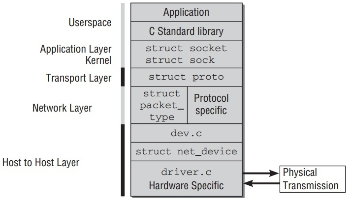
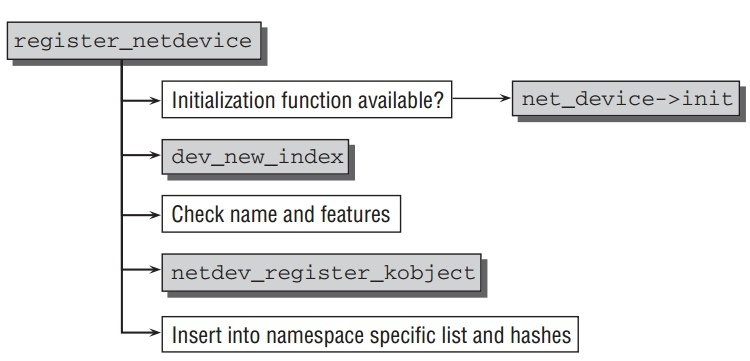
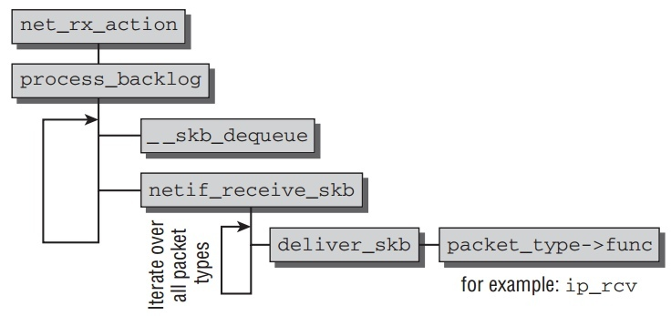
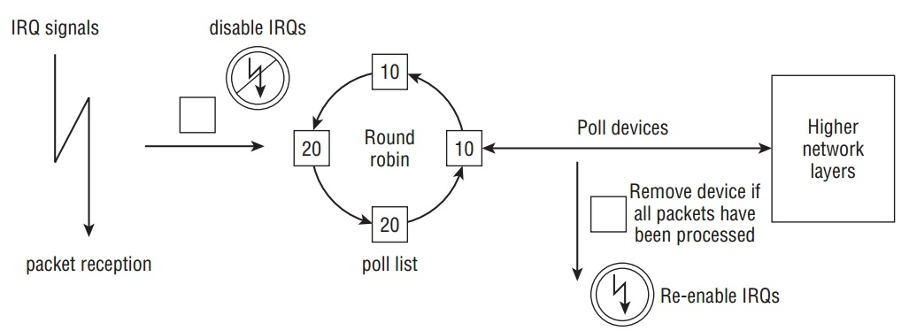

Linux network and Network access layer
Table of Contents
Layer Model of Network
TCP/IP 与 ISO/OSI分层对比如下:

而在Linux kernel中实现的分层模型如下:

整个代码分层结构实现,每层都有不同的数据结构去封装好,代码流程中充满了各种函数指针而不是直接的函数调用.这也是不可避免的,因为层与层的组成有很多方式,这也导致不是那么容易和清晰去追踪代码流程.
针对Linux Network的实现分析也分层来解析:
Networking Namespaces
从2.6开始,kernel采用namespaces管理networking subsystem.
一个集中式的结构来管理所有可用的namesapce,如下:
// include/net/net_namespace.h struct net { atomic_t count; /* To decided when the network * namespace should be freed. */ ... struct list_head list; /* list of network namespaces */ ... struct proc_dir_entry *proc_net; struct proc_dir_entry *proc_net_stat; struct proc_dir_entry *proc_net_root; struct net_device *loopback_dev; /* The loopback */ struct list_head dev_base_head; struct hlist_head *dev_name_head; struct hlist_head *dev_index_head; };
count: 使用计数.list: 所有namespaces用一个以net_namespace_list为头的doubly linked list来维护.copy_net_ns函数把新的namespace加入list中去.proc_net表示/proc/net,proc_net_stat表示/proct/net/stats,而proc_net_root表示/proc.- Network devices由数据结果
struct net_device表示.在一个namespace中的所有设备通过以dev_base_head为头的doubly linked list来存储.并且存储在另外两个hash表中: 使用device name为key的dev_name_head, 和使用interface index为key的dev_index_head.devices和interfaces的概念有点不同.devices表示提供物理传输能力的硬件设备.而interfaces可以是虚拟的点.可能基于实际设备上实现.比如一个网卡可以提供两个interfaces.
每个network namespace包换许多元件,所以当一个新的network namespace被创建,这些元件必须被初始化.同样,当它被删除时,需要做必要的清理工作.Kernel 引入了如下结构来维护所有需要做的 initialization/cleanup 工作:
// include/net/net_namespace.h struct pernet_operations { struct list_head list; int (*init)(struct net *net); void (*exit)(struct net *net); };
当一个新的network namespace被创建, kernel遍历 pernet_operations 的
list,并调用其init函数.
Network access layer
Network access layer主要负责在设备与网卡驱动互传数据.
Representation of Network Devices
在kernel中,每个网络设备都用 net_device 结构体实例来表示.一旦一个结构体实例被分配和初始化,它必须在kernel中注册,使用 net/core/dev.c 里的
register_netdev .这个函数做一些初始化工作,并同普通设备一样注册这个设备.它同时创建一个 sysfs 点 /sys/class/net/<device> . 如:
felix@felix-altai:~/Desktop$ ls -l /sys/class/net total 0 lrwxrwxrwx 1 root root 0 Nov 5 16:19 eth0 -> ../../devices/pci0000:00/0000:00:19.0/net/eth0 lrwxrwxrwx 1 root root 0 Nov 11 10:10 lo -> ../../devices/virtual/net/lo
在分析 struct net_device 前,先搞清楚kernel如何维护可用的network
devices,并如何寻找特定的network device.在net namespace的net中:
- 所有设备以
dev_base_head为头的doubly linked list来存储. 可以通过for_each_netdev来遍历所有net下的设备. - 通过device name的hash.
dev_get_by_name(struct net *net, const char *name)函数在此hash上找寻特定设备. - 通过interface index的hash.
dev_get_by_index(struct net *net, int ifindex)函数在此hash上找寻特定设备.
net_device 结构包含device能想到的所有信息.整个结构非常的大.基本的结果如下:
// /include/linux/netdevice.h struct net_device { char name[IFNAMSIZ]; /* device name hash chain */ struct hlist_node name_hlist; /* I/O specific fields */ unsigned long mem_end; /* shared mem end */ unsigned long mem_start; /* shared mem start */ unsigned long base_addr; /* device I/O address */ unsigned int irq; /* device IRQ number */ unsigned long state; struct list_head dev_list; /* Interface index. Unique device identifier */ int ifindex; struct net_device_stats stats; /* Management operations */ const struct net_device_ops *netdev_ops; const struct ethtool_ops *ethtool_ops; /* Hardware header description */ const struct header_ops *header_ops; unsigned int flags; /* interface flags (a la BSD) */ unsigned short gflags; unsigned short priv_flags; /* Like 'flags' but invisible to userspace. */ unsigned short padded; /* How much padding added by alloc_netdev() */ unsigned char operstate; /* RFC2863 operstate */ unsigned char link_mode; /* mapping policy to operstate */ unsigned mtu; /* interface MTU value */ unsigned short type; /* interface hardware type */ unsigned short hard_header_len; /* hardware hdr length */ struct net *nd_net; /* class/net/name entry */ struct device dev; ...
nameandifindex:dev_get_by_name和dev_get_by_index查找的key.type: 设备使用的硬件类型,来自<if_arp.h>.比如ARPHRD_ETHER和ARPHDR_IEEE802代表10 Mbit and 802.2 Ethernet.dev_addr: 存储设备硬件地址.(比如Ethernet卡的MAC address).addr_len指定地址长度.broadcast是广播地址.ip_ptr,ip6_ptr之类是指向特定协议数据的指针.这些指针中一些会非null值,因为一个网络设备可以同时被不同网络协议使用.
struct net_device_stats stats: 设备的各种统计信息在此结构中.struct net_device_ops *netdev_ops;和struct header_ops *header_ops;: 相较于前面的kernel版本,把操作类函数封装到结构体中.
header_ops对于Ethernet卡来说,
struct header_ops由net/ethernet/net.c赋值:const struct header_ops eth_header_ops ____cacheline_aligned = { .create = eth_header, .parse = eth_header_parse, .rebuild = eth_rebuild_header, .cache = eth_header_cache, .cache_update = eth_header_cache_update, };
eth_header: create the Ethernet header.eth_header_parse: extract hardware address from packet.eth_rebuild_header: rebuild the Ethernet MAC header.eth_header_cache: fill cache entry from neighbour.
net_device_ops这个结构定义了对network devices的管理函数指针.具体代码这里.
ndo_open和ndo_stop初始化和关闭network cards.通常有ifconfig命令触发.ndo_start_xmit用来从等待队列移除包并发送.ndo_get_stats返回统计信息.ndo_tx_timeout当发送包超时,调用这个函数.
Allocating and registering network devices
注册network device一般分为2步:
alloc_netdev_mq分配新的struct net_device实例. 针对不同的协议, 传入不同的setup函数.比如对于Ethernet设备,使用ether_setup.- 一旦
struct net_device被参数填完整后,它需要使用register_netdev或register_netdevice来注册.两者的区别是,register_netdev允许一定格式的interface名字.比如Ethernet设备指定名字eth%d, 它会依次把它命名为eth0, eth1… 然后它调用register_netdevice.
alloc_netdev_mq基本流程如下:

以Ethernet设备为例:
#define alloc_etherdev(sizeof_priv) alloc_etherdev_mq(sizeof_priv, 1) struct net_device *alloc_etherdev_mq(int sizeof_priv, unsigned int queue_count) { return alloc_netdev_mq(sizeof_priv, "eth%d", ether_setup, queue_count); }
register_netdevice基本流程如下:

- 有
dev->netdev_ops->ndo_init,先调用它初始化. dev_new_index产生唯一的编号,赋值给dev->ifindex.netdev_register_kobject把它加入到普通kernel对象模型中.同时创建上面提到的sysfs点.- 加入到特定namesapce的hash表中.
- 有
Example
以 atheros 的一个网卡初始化为例:
struct net_device *dev; athr_gmac_t *mac; dev = alloc_etherdev(ATHR_MAC_ETHERDEV_SZ); if (!dev) { printk(MODULE_NAME ": unable to allocate mac\n"); return 1; } ATHR_MAC_NETPRIV(mac,dev); memset(mac, 0, sizeof(athr_gmac_t)); mac->mac_dev = dev; mac->mac_unit = i; mac->mac_base = athr_gmac_base(i); ... static struct net_device_ops athr_gmac_net_ops; athr_gmac_net_ops.ndo_open = athr_gmac_open; athr_gmac_net_ops.ndo_stop = athr_gmac_stop; athr_gmac_net_ops.ndo_start_xmit= athr_gmac_hard_start; ... if (register_netdev(dev)) { printk(MODULE_NAME ": register netdev failed\n"); goto failed; }
Receiving Packets
包在不定时到达kernel. 设备驱动基本使用中断来通知kernel包的到达.
- Traditional Method
现在kernel支持两种包接受的框架.一种一直在kernel中,被称为 traditional method. 这种 API 对于非常高速的网络适配器有问题,所以新的 API (一般被成为NAPI, new API)被设计出来.先分析易于理解的传统方法,之后在分析NAPI.
如下图显示,一个包到达网络适配器后如何从kernel到达network层函数的路径.

因为包的接受在中断处理中,这个处理只处理必要的工作,让系统不致于延迟太久去进行其他活动.
以
/drivers/net/isa-skeleton.c为例(因为涉及到具体网卡的驱动):net_interrupt是驱动程序所安装的中断程序.如果判断是接受包,传递到net_rx.net_rx函数先创建一个新的socket buffer. 然后根据协议对它进行相应的初始化.之后把这个skb丢给netif_rx.netif_rx不在是驱动相关函数,它在net/core/dev.c. 它负责特定网卡与通用network层的通信. 它的主要目的是把接收到的包放到特定CPU的等待队列中,并退出中断处理程序.
kernel使用全局的
softnet_data数组来管理等待队列.为了加速多核处理器, 等待队列为每个CPU创建来支持并行处理包.这里只关注数据包头:// <netdevice.h> struct softnet_data { ... struct sk_buff_head input_pkt_queue; ... };
最后
netif_rx触发软中断NET_RX_SOFTIRQ(__raise_softirq_irqoff(NET_RX_SOFTIRQ);) 在结束前.net_rx_action是NET_RX_SOFTIRQ软中断的处理函数.它的简化版流程图如下,它的完整流程在之后高速网络适配器中分析.
在做一些准备工作后,进入函数
process_backlog(如下).它进行如下的循环:// init queue->backlog.poll = process_backlog; // net_rx_action work = n->poll(n, weight);
__skb_dequeue从等待队列移除要处理的socket buffer.netif_receive_skb分析包的类型,处理Vlan,bridging之类,若往上层传, 查找相应协议的处理函数,传入deliver_skb由它调用相应的上层network layer的函数继续处理,
所有network layer用来接收低层network access layer的函数注册在全局的 hash表
ptype_base和ptype_all.新的协议通过
dev_add_pack加入到hash表中.hash中节点类型是packet_type如下:// <netdevice.h> struct packet_type { __be16 type; /* This is really htons(ether_type). */ struct net_device *dev; /* NULL is wildcarded here */ int (*func) (struct sk_buff *, struct net_device *, struct packet_type *, struct net_device *); ... void *af_packet_priv; struct list_head list; };
type指定处理的协议标识.func是这个结构的重点元素.指向network layer的函数,用来处理从低层传上来阿包.比如ip_rcv用来处理IPv4协议的包.
netif_receive_skb为socket buffer找到合适的处理结构,调用它的func函数,然后把处理包的任务交给network layer,也就是上层网络实现. - Support for High-Speed Interfaces
对于慢速设备,服务 IRQ 通常在下一个包到达前完成.因为下一个包也将发送 IRQ 信号, 不满足这条件–时常就是快速设备导致问题.如果Ethernet卡工作在 10,000 MBit/s,那么它将触发超多中断如果使用旧的方法.当包仍然在等待被处理,新的 IRQ 传递给kernel是没有意义, 因为它正在处理包.为了解决这个问题,NAPI 结合使用 IRQs 和 polling.
NAPI 机制的基本流程是:
- 第一个包触使network适配器触发IRQ.为了防止之后的包产生更多的IRQs,驱动关闭这个适配器Rx IRQs.并且,这个适配器被放到poll list中.
- kernel 去poll在poll list中的设备,直到没有包在适配器中等待.
- Rx 中断再次被打开.
虽然polling在设备驱动中经常是不好的技术,但在这里没有什么缺点:Polling将停止当没有包需要被处理时,设备再次回到正常的IRQ模式的操作.不会有不必要的时间浪费去poll空的接收队列.
NAPI 的另外一个优势是包能有效率的被丢弃.如果kernel能确认处理更多的新包超过了它的负荷,包能直接在network适配器中丢弃而不用拷贝到kernel中去.
只有设备满足一下2个条件才能实现NAPI方法:
- 设备必须能保存多个收到的包,比如在DMA ring缓冲中.
- 必须可以关闭接收包的IRQs.并且发送包与其他一些通过IRQs工作的管理函数必须能保持打开.
如果多于一个设备在系统中会如何? Round robin 方法被引入来poll设备.基本流程如下图:

kernel处理list上的设备以round robin 方式:
- 一个设备接着一个设备的poll, 当一定的时间花费在处理一个设备,另外个设备被选中来处理.
- 每个设备都有一个相对的权值来表示与poll list上的其他设备的重要性.更大的权值被更快的设备使用.因为权值指定多少个包被处理在一次polling round中,这保证了更快的设备得到更多的关注相对慢的.
现在NAPI的基本概念清晰了,继续分析细节实现.与旧API比,关键区别是网络设备提供一个
poll的函数. 在初始化网络设备,使用netif_napi_add指定设备相关的此方法.// <netdevice.h> static inline void netif_napi_add(struct net_device *dev, struct napi_struct *napi, int (*poll)(struct napi_struct *, int), int weight);
poll指定哪个函数被使用当IRQs关闭时,weight就是上面提到的设备权值.权值不能超过设备Rx缓冲能存储的最大包个数.struct napi_struct用来管理poll list上的设备.它定义如下:// <netdevice.h> struct napi_struct { struct list_head poll_list; unsigned long state; int weight; int (*poll)(struct napi_struct *, int); };
poll list是以标准双向kernel链表所实现,
poll_list正是这个元素.weight和poll和上面意义一样.state可以是NAPI_STATE_SCHED, 当设备下次被poll,NAPI_STATE_DISABLE一旦poll完成并且没有更多的等待包需要处理.- Implementing Poll Functions
poll函数有两个参数,一个指向
napi_struct实例的指针和一个整数指定 budget,也就是kernel能处理的包的个数.这里分析一个虚拟的函数,而不是特定某个网卡:static int hyper_card_poll(struct napi_struct *napi, int budget) { struct nic *nic = container_of(napi, struct nic, napi); struct net_device *netdev = nic->netdev; int work_done; work_done = hyper_do_poll(nic, budget); //call netif_receive_skb if (work_done < budget) { netif_rx_complete(netdev, napi); hcard_reenable_irq(nic); } return work_done; }
通过
napi_struct获得设备相关的信息,然后硬件特定的poll方法hyper_do_poll被调用来进行必要的底层操作来从网络适配器获取包,并使用netif_receive_skb把它们传送到更高的网络层.hyper_do_poll允许处理budget个包.函数返回实际处理了多少个包.有2中情况:- 处理包个数小于budget,说明没有更多可处理的包,也就是Rx buffer空了,否则剩下包会将被处理.因为,
netif_rx_complete把此情况通知给 kernel,kernel将把设备从poll list中移除.同时,驱动重新打开IRQs. - 尽管budget被完全使用完,但是更多的包仍然等待着被处理.设备留在poll list中,中断不会再次打开.
- 处理包个数小于budget,说明没有更多可处理的包,也就是Rx buffer空了,否则剩下包会将被处理.因为,
- Implementing IRQ Handlers
NAPI 同时要求网络设备的IRQ处理有所改变.分析一个简单构造的函数:
static irqreturn_t e100_intr(int irq, void *dev_id) { struct net_device *netdev = dev_id; struct nic *nic = netdev_priv(netdev); if(likely(netif_rx_schedule_prep(netdev, &nic->napi))) { hcard_disable_irq(nic); __netif_rx_schedule(netdev, &nic->napi); } return IRQ_HANDLED; }
设备相关的信息包含在
net_device->private, 大部分网卡驱动都使用这个方法.kernel需要得到通知有新的包要处理.一个分2步的方法需要:netif_rx_schedule_prep准备设备放入poll list中.关键就是设置napi_struct->flags为NAPI_STATE_SCHED.- 如果设置成功,驱动必须关闭IRQs. 调用
__netif_rx_schedule把设备的napi_struct加入到poll list中并且触发NET_RX_SOFTIRQ的 softIRQ.这通知kernel开始poll在函数net_rx_action.
- Handling the Rx SoftIRQ
net_rx_action是 softIRQNET_RX_SOFTIRQ的处理函数,之前分析了它的简化版本,现在分析整个的细节.它基本的流程如下:
核心概念就是kernel处理在poll list的所有设备通过调用设备特定的poll方法.然后并且需要保证不是花了太多时间在此softIRQ处理中. 处理将推出在以下两中情况:
- 超过1 jiffie花费在处理上.
- 总共处理的包的个数超过一个总的由
netdev_budget指定的budget.通常这个值设为300, 但是可以通过/proc/sys/net/core/netdev_budget修改.
- Implementation of the Old API on Top of NAPI
那么旧API如何在NAPI上实现呢.kernel的正常收包行为由一个默认的拥有 softnet queue 的网络设备,
process_backlog(net/core/dev.c)是这个设备的poll方法.如果没有网络设备把它们加入到poll list中,那么它只包含这个默认的适配器,那么net_rx_action的处理仅仅是调用一个process_backlog,无论队列中的包来自任何设备.
Sending Packets
当上层完成数据包的整个头,并且计算好checksums.由函数
dev_queue_xmit(net/core/dev.c) 把它放到发送队列中,并发送到特定网络设备.最终由dev的操作结构 struct net_device_ops 的函数 ndo_start_xmit
完成特定设备发送包.
Reference
net_device_ops
/* * This structure defines the management hooks for network devices. * The following hooks can be defined; unless noted otherwise, they are * optional and can be filled with a null pointer. * * int (*ndo_init)(struct net_device *dev); * This function is called once when network device is registered. * The network device can use this to any late stage initializaton * or semantic validattion. It can fail with an error code which will * be propogated back to register_netdev * * void (*ndo_uninit)(struct net_device *dev); * This function is called when device is unregistered or when registration * fails. It is not called if init fails. * * int (*ndo_open)(struct net_device *dev); * This function is called when network device transistions to the up * state. * * int (*ndo_stop)(struct net_device *dev); * This function is called when network device transistions to the down * state. * * netdev_tx_t (*ndo_start_xmit)(struct sk_buff *skb, * struct net_device *dev); * Called when a packet needs to be transmitted. * Must return NETDEV_TX_OK , NETDEV_TX_BUSY. * (can also return NETDEV_TX_LOCKED iff NETIF_F_LLTX) * Required can not be NULL. * * u16 (*ndo_select_queue)(struct net_device *dev, struct sk_buff *skb); * Called to decide which queue to when device supports multiple * transmit queues. * * void (*ndo_change_rx_flags)(struct net_device *dev, int flags); * This function is called to allow device receiver to make * changes to configuration when multicast or promiscious is enabled. * * void (*ndo_set_rx_mode)(struct net_device *dev); * This function is called device changes address list filtering. * * void (*ndo_set_multicast_list)(struct net_device *dev); * This function is called when the multicast address list changes. * * int (*ndo_set_mac_address)(struct net_device *dev, void *addr); * This function is called when the Media Access Control address * needs to be changed. If this interface is not defined, the * mac address can not be changed. * * int (*ndo_validate_addr)(struct net_device *dev); * Test if Media Access Control address is valid for the device. * * int (*ndo_do_ioctl)(struct net_device *dev, struct ifreq *ifr, int cmd); * Called when a user request an ioctl which can't be handled by * the generic interface code. If not defined ioctl's return * not supported error code. * * int (*ndo_set_config)(struct net_device *dev, struct ifmap *map); * Used to set network devices bus interface parameters. This interface * is retained for legacy reason, new devices should use the bus * interface (PCI) for low level management. * * int (*ndo_change_mtu)(struct net_device *dev, int new_mtu); * Called when a user wants to change the Maximum Transfer Unit * of a device. If not defined, any request to change MTU will * will return an error. * * void (*ndo_tx_timeout)(struct net_device *dev); * Callback uses when the transmitter has not made any progress * for dev->watchdog ticks. * * struct net_device_stats* (*ndo_get_stats)(struct net_device *dev); * Called when a user wants to get the network device usage * statistics. If not defined, the counters in dev->stats will * be used. * * void (*ndo_vlan_rx_register)(struct net_device *dev, struct vlan_group *grp); * If device support VLAN receive accleration * (ie. dev->features & NETIF_F_HW_VLAN_RX), then this function is called * when vlan groups for the device changes. Note: grp is NULL * if no vlan's groups are being used. * * void (*ndo_vlan_rx_add_vid)(struct net_device *dev, unsigned short vid); * If device support VLAN filtering (dev->features & NETIF_F_HW_VLAN_FILTER) * this function is called when a VLAN id is registered. * * void (*ndo_vlan_rx_kill_vid)(struct net_device *dev, unsigned short vid); * If device support VLAN filtering (dev->features & NETIF_F_HW_VLAN_FILTER) * this function is called when a VLAN id is unregistered. * * void (*ndo_poll_controller)(struct net_device *dev); */ #define HAVE_NET_DEVICE_OPS struct net_device_ops { int (*ndo_init)(struct net_device *dev); void (*ndo_uninit)(struct net_device *dev); int (*ndo_open)(struct net_device *dev); int (*ndo_stop)(struct net_device *dev); netdev_tx_t (*ndo_start_xmit) (struct sk_buff *skb, struct net_device *dev); u16 (*ndo_select_queue)(struct net_device *dev, struct sk_buff *skb); #define HAVE_CHANGE_RX_FLAGS void (*ndo_change_rx_flags)(struct net_device *dev, int flags); #define HAVE_SET_RX_MODE void (*ndo_set_rx_mode)(struct net_device *dev); #define HAVE_MULTICAST void (*ndo_set_multicast_list)(struct net_device *dev); #define HAVE_SET_MAC_ADDR int (*ndo_set_mac_address)(struct net_device *dev, void *addr); #define HAVE_VALIDATE_ADDR int (*ndo_validate_addr)(struct net_device *dev); #define HAVE_PRIVATE_IOCTL int (*ndo_do_ioctl)(struct net_device *dev, struct ifreq *ifr, int cmd); #define HAVE_SET_CONFIG int (*ndo_set_config)(struct net_device *dev, struct ifmap *map); #define HAVE_CHANGE_MTU int (*ndo_change_mtu)(struct net_device *dev, int new_mtu); int (*ndo_neigh_setup)(struct net_device *dev, struct neigh_parms *); #define HAVE_TX_TIMEOUT void (*ndo_tx_timeout) (struct net_device *dev); struct net_device_stats* (*ndo_get_stats)(struct net_device *dev); void (*ndo_vlan_rx_register)(struct net_device *dev, struct vlan_group *grp); void (*ndo_vlan_rx_add_vid)(struct net_device *dev, unsigned short vid); void (*ndo_vlan_rx_kill_vid)(struct net_device *dev, unsigned short vid); #ifdef CONFIG_NET_POLL_CONTROLLER #define HAVE_NETDEV_POLL void (*ndo_poll_controller)(struct net_device *dev); #endif #if defined(CONFIG_FCOE) || defined(CONFIG_FCOE_MODULE) int (*ndo_fcoe_enable)(struct net_device *dev); int (*ndo_fcoe_disable)(struct net_device *dev); int (*ndo_fcoe_ddp_setup)(struct net_device *dev, u16 xid, struct scatterlist *sgl, unsigned int sgc); int (*ndo_fcoe_ddp_done)(struct net_device *dev, u16 xid); #endif };
header_ops
struct header_ops { int (*create) (struct sk_buff *skb, struct net_device *dev, unsigned short type, const void *daddr, const void *saddr, unsigned len); int (*parse)(const struct sk_buff *skb, unsigned char *haddr); int (*rebuild)(struct sk_buff *skb); #define HAVE_HEADER_CACHE int (*cache)(const struct neighbour *neigh, struct hh_cache *hh); void (*cache_update)(struct hh_cache *hh, const struct net_device *dev, const unsigned char *haddr); };
alloc_netdev_mq
/** * alloc_netdev_mq - allocate network device * @sizeof_priv: size of private data to allocate space for * @name: device name format string * @setup: callback to initialize device * @queue_count: the number of subqueues to allocate * * Allocates a struct net_device with private data area for driver use * and performs basic initialization. Also allocates subquue structs * for each queue on the device at the end of the netdevice. */ struct net_device *alloc_netdev_mq(int sizeof_priv, const char *name, void (*setup)(struct net_device *), unsigned int queue_count) { struct netdev_queue *tx; struct net_device *dev; size_t alloc_size; struct net_device *p; BUG_ON(strlen(name) >= sizeof(dev->name)); alloc_size = sizeof(struct net_device); if (sizeof_priv) { /* ensure 32-byte alignment of private area */ alloc_size = ALIGN(alloc_size, NETDEV_ALIGN); alloc_size += sizeof_priv; } /* ensure 32-byte alignment of whole construct */ alloc_size += NETDEV_ALIGN - 1; p = kzalloc(alloc_size, GFP_KERNEL); if (!p) { printk(KERN_ERR "alloc_netdev: Unable to allocate device.\n"); return NULL; } tx = kcalloc(queue_count, sizeof(struct netdev_queue), GFP_KERNEL); if (!tx) { printk(KERN_ERR "alloc_netdev: Unable to allocate " "tx qdiscs.\n"); goto free_p; } dev = PTR_ALIGN(p, NETDEV_ALIGN); dev->padded = (char *)dev - (char *)p; if (dev_addr_init(dev)) goto free_tx; dev_unicast_init(dev); dev_net_set(dev, &init_net); dev->_tx = tx; dev->num_tx_queues = queue_count; dev->real_num_tx_queues = queue_count; dev->gso_max_size = GSO_MAX_SIZE; netdev_init_queues(dev); INIT_LIST_HEAD(&dev->napi_list); dev->priv_flags = IFF_XMIT_DST_RELEASE; setup(dev); strcpy(dev->name, name); return dev; free_tx: kfree(tx); free_p: kfree(p); return NULL; }
athr_gmac_init
static int __init athr_gmac_init(void) { int i; struct net_device *dev; athr_gmac_t *mac; uint32_t mask = 0; if (0 == tx_len_per_ds) tx_len_per_ds = CONFIG_ATHR_GMAC_LEN_PER_TX_DS; athr_gmac_vet_tx_len_per_pkt( &tx_len_per_ds); printk(MODULE_NAME ": Length per segment %d\n", tx_len_per_ds); /* * Compute the number of descriptors for an MTU */ tx_max_desc_per_ds_pkt =1; /* ** Do the rest of the initializations */ for(i = 0; i < ATHR_GMAC_NMACS; i++) { dev = alloc_etherdev(ATHR_MAC_ETHERDEV_SZ); if (!dev) { printk(MODULE_NAME ": unable to allocate mac\n"); return 1; } ATHR_MAC_NETPRIV(mac,dev); memset(mac, 0, sizeof(athr_gmac_t)); mac->mac_dev = dev; mac->mac_unit = i; mac->mac_base = athr_gmac_base(i); mac->mac_irq = athr_gmac_irq(i); mac->mac_noacs = 1; mac->num_tx_desc = athr_tx_desc_num[i]; #if !CONFIG_GMAC_RXTIMER mac->num_rx_desc = athr_rx_desc_num[i]; #else mac->num_rx_desc = rx_pkt_cnt; #endif mac->reap_thresh = athr_tx_desc_num[i] / 2; mac->qstart_thresh = 4 * tx_max_desc_per_ds_pkt; mac->mac_speed = ATHR_PHY_SPEED_UNKNOWN; mac->no_of_macs = ATHR_GMAC_NMACS; /* * Assign MII typs and PHY associated. */ if (i) { //For MAC1 mac->mii_intf = CFG_ATHR_GMAC1_MII; mac->mii_phy = CFG_ATHR_GMAC1_MII_PHY; } else { //For MAC0 mac->mii_intf = CFG_ATHR_GMAC0_MII; mac->mii_phy = CFG_ATHR_GMAC0_MII_PHY; } athr_gmacs[i] = mac; athr_gmac_attach(mac); if(!mac->ops) { printk(MODULE_NAME "ERROR: No MAC found !!!\n"); assert(0); return 1; } mac->ops->set_caps(mac); if (mac_has_flag(mac, ETH_SWONLY_MODE)) { if (mac->mac_unit == 0) continue; } athr_gmac_phy_attach(mac, mac->mac_unit); spin_lock_init(&mac->mac_lock); /* * out of memory timer */ init_timer(&mac->mac_oom_timer); mac->mac_oom_timer.data = (unsigned long)mac; mac->mac_oom_timer.function = (void *)athr_gmac_oom_timer; ATHR_MAC_INIT_WORK(mac, athr_gmac_tx_timeout_task); if (mac->mii_intf == ATHR_SGMII && mac_has_flag(mac, ETH_LINK_INTERRUPT) && !(is_qca956x() && is_s17())) { ATHR_MAC_INIT_SGMII_INT(mac, athr_gmac_sgmii_intr); } /* * watchdog task */ ATHR_MAC_SET_DEV_NET_OPS(dev, mac, athr_gmac_get_stats, athr_gmac_open, athr_gmac_stop, athr_gmac_hard_start, athr_gmac_do_ioctl, athr_gmac_poll, athr_gmac_tx_timeout, ATHR_GMAC_NAPI_WEIGHT, ATH_GMAC_TXQUEUELEN); ATH_INIT_RX_TASK(); ATH_INIT_TX_TASK(); if (mac_has_flag(mac,ATHR_RX_TASK)) printk(MODULE_NAME ": RX TASKLET - Pkts per Intr:%d\n", rx_quota); athr_gmac_get_default_macaddr(mac, dev->dev_addr); athr_register_hwaccels(mac); if (register_netdev(dev)) { printk(MODULE_NAME ": register netdev failed\n"); goto failed; } netif_carrier_off(dev); athr_register_qos(mac); athr_register_vlan_igmp(mac); if(!mac->phy) printk("MAC:%d Warning: Phy not found!!!\n",mac->mac_unit); athr_gmac_trc_init(); /* * Initialize timers. */ if (mac_has_flag(mac,CHECK_DMA_STATUS)) { mac->dma_chk_ts = jiffies; } if (mac_has_flag(mac,ETH_SOFT_LED)) { mac->led_blink_ts = jiffies; } if (mac_has_flag(mac,ETH_LINK_POLL)) { mac->link_ts = jiffies; } /* * When flowmac is enabled by default, all registrations must happen * by default. Wireless driver comes with default state and would be * enabled on fly */ athr_gmac_flowmac_register(dev); } if (athr_gmacs[0]->mii_intf == ATHR_SGMII || ( (ATHR_GMAC_NMACS > 1) && athr_gmacs[1]->mii_intf == ATHR_SGMII)) { serdes_pll_lock_detect_st(); } /* * MDIO init for slave scorpion if connected !! */ if (mac_has_flag(mac, SLAVE_SCO_CONNECTED)) { printk (MODULE_NAME ": Initializing the mdio's for slave\n"); mdio_init_device(); } /* * Do the resets. */ for (i = 0; i < ATHR_GMAC_NMACS; i++) { athr_gmac_reg_rmw_set(athr_gmacs[i], MAC_CONFIGURATION_1_ADDRESS, ( MAC_CONFIGURATION_1_SOFT_RESET_SET(1) | MAC_CONFIGURATION_1_RESET_RX_MAC_SET(1) | MAC_CONFIGURATION_1_RESET_TX_MAC_SET(1))); udelay(20); if (i) mask = (RST_RESET_GE1_MDIO_RESET_SET(1) | RST_RESET_GE1_MAC_RESET_SET(1)); else mask = (RST_RESET_GE0_MDIO_RESET_SET(1) | RST_RESET_GE0_MAC_RESET_SET(1)); /* * put into reset, hold, pull out. */ athr_reg_rmw_set(RST_RESET_ADDRESS, mask); mdelay(100); athr_reg_rmw_clear(RST_RESET_ADDRESS, mask); /* * Increase the delay for MDIO and MAC reset to settle down. */ mdelay(200); athr_gmac_reg_rmw_clear(athr_gmacs[i], MAC_CONFIGURATION_1_ADDRESS, MAC_CONFIGURATION_1_SOFT_RESET_SET(1)); } athr_register_hwaccels_notifiers(athr_gmacs[0]); // Register Push button notification handler if (is_push_button() && athr_gmacs[0]) { mac = athr_gmacs[0]; dev = mac->mac_dev; register_simple_config_callback (dev->name, (void *) pushbutton_intr, (void *) dev, (void *)&mac->push_dur); } return 0; failed: for(i = 0; i < ATHR_GMAC_NMACS; i++) { if (!athr_gmacs[i]) continue; if (athr_gmacs[i]->mac_dev) { if (mac_has_flag(athr_gmacs[i],ETH_LINK_INTERRUPT) && (i == ATHR_GMAC_NMACS)) printk("%s Freeing at 0x%lx\n",__func__,(unsigned long) athr_gmacs[i]); free_netdev(athr_gmacs[i]->mac_dev); } } return 1; }
netif_rx
/** * netif_rx - post buffer to the network code * @skb: buffer to post * * This function receives a packet from a device driver and queues it for * the upper (protocol) levels to process. It always succeeds. The buffer * may be dropped during processing for congestion control or by the * protocol layers. * * return values: * NET_RX_SUCCESS (no congestion) * NET_RX_DROP (packet was dropped) * */ int netif_rx(struct sk_buff *skb) { struct softnet_data *queue; unsigned long flags; /* if netpoll wants it, pretend we never saw it */ if (netpoll_rx(skb)) return NET_RX_DROP; if (!skb->tstamp.tv64) net_timestamp(skb); /* * The code is rearranged so that the path is the most * short when CPU is congested, but is still operating. */ local_irq_save(flags); queue = &__get_cpu_var(softnet_data); __get_cpu_var(netdev_rx_stat).total++; if (queue->input_pkt_queue.qlen <= netdev_max_backlog) { if (queue->input_pkt_queue.qlen) { enqueue: __skb_queue_tail(&queue->input_pkt_queue, skb); local_irq_restore(flags); return NET_RX_SUCCESS; } napi_schedule(&queue->backlog); goto enqueue; } __get_cpu_var(netdev_rx_stat).dropped++; local_irq_restore(flags); kfree_skb(skb); return NET_RX_DROP; }
net_rx_action
static void net_rx_action(struct softirq_action *h) { struct list_head *list = &__get_cpu_var(softnet_data).poll_list; unsigned long time_limit = jiffies + 2; int budget = netdev_budget; void *have; local_irq_disable(); while (!list_empty(list)) { struct napi_struct *n; int work, weight; /* If softirq window is exhuasted then punt. * Allow this to run for 2 jiffies since which will allow * an average latency of 1.5/HZ. */ if (unlikely(budget <= 0 || time_after(jiffies, time_limit))) goto softnet_break; local_irq_enable(); /* Even though interrupts have been re-enabled, this * access is safe because interrupts can only add new * entries to the tail of this list, and only ->poll() * calls can remove this head entry from the list. */ n = list_entry(list->next, struct napi_struct, poll_list); have = netpoll_poll_lock(n); weight = n->weight; /* This NAPI_STATE_SCHED test is for avoiding a race * with netpoll's poll_napi(). Only the entity which * obtains the lock and sees NAPI_STATE_SCHED set will * actually make the ->poll() call. Therefore we avoid * accidently calling ->poll() when NAPI is not scheduled. */ work = 0; if (test_bit(NAPI_STATE_SCHED, &n->state)) { work = n->poll(n, weight); trace_napi_poll(n); } WARN_ON_ONCE(work > weight); budget -= work; local_irq_disable(); /* Drivers must not modify the NAPI state if they * consume the entire weight. In such cases this code * still "owns" the NAPI instance and therefore can * move the instance around on the list at-will. */ if (unlikely(work == weight)) { if (unlikely(napi_disable_pending(n))) { local_irq_enable(); napi_complete(n); local_irq_disable(); } else list_move_tail(&n->poll_list, list); } netpoll_poll_unlock(have); } out: local_irq_enable(); #ifdef CONFIG_NET_DMA /* * There may not be any more sk_buffs coming right now, so push * any pending DMA copies to hardware */ dma_issue_pending_all(); #endif return; softnet_break: __get_cpu_var(netdev_rx_stat).time_squeeze++; __raise_softirq_irqoff(NET_RX_SOFTIRQ); goto out; }
netif_napi_add
void netif_napi_add(struct net_device *dev, struct napi_struct *napi, int (*poll)(struct napi_struct *, int), int weight) { INIT_LIST_HEAD(&napi->poll_list); napi->gro_count = 0; napi->gro_list = NULL; napi->skb = NULL; napi->poll = poll; napi->weight = weight; list_add(&napi->dev_list, &dev->napi_list); napi->dev = dev; #ifdef CONFIG_NETPOLL spin_lock_init(&napi->poll_lock); napi->poll_owner = -1; #endif set_bit(NAPI_STATE_SCHED, &napi->state); }
dev_queue_xmit
int dev_queue_xmit(struct sk_buff *skb) { struct net_device *dev = skb->dev; struct netdev_queue *txq; struct Qdisc *q; int rc = -ENOMEM; /* GSO will handle the following emulations directly. */ if (netif_needs_gso(dev, skb)) goto gso; if (skb_has_frags(skb) && !(dev->features & NETIF_F_FRAGLIST) && __skb_linearize(skb)) goto out_kfree_skb; /* Fragmented skb is linearized if device does not support SG, * or if at least one of fragments is in highmem and device * does not support DMA from it. */ if (skb_shinfo(skb)->nr_frags && (!(dev->features & NETIF_F_SG) || illegal_highdma(dev, skb)) && __skb_linearize(skb)) goto out_kfree_skb; /* If packet is not checksummed and device does not support * checksumming for this protocol, complete checksumming here. */ if (skb->ip_summed == CHECKSUM_PARTIAL) { skb_set_transport_header(skb, skb->csum_start - skb_headroom(skb)); if (!dev_can_checksum(dev, skb) && skb_checksum_help(skb)) goto out_kfree_skb; } gso: /* Disable soft irqs for various locks below. Also * stops preemption for RCU. */ rcu_read_lock_bh(); txq = dev_pick_tx(dev, skb); q = rcu_dereference(txq->qdisc); #ifdef CONFIG_NET_CLS_ACT skb->tc_verd = SET_TC_AT(skb->tc_verd, AT_EGRESS); #endif if (q->enqueue) { rc = __dev_xmit_skb(skb, q, dev, txq); goto out; } /* The device has no queue. Common case for software devices: loopback, all the sorts of tunnels... Really, it is unlikely that netif_tx_lock protection is necessary here. (f.e. loopback and IP tunnels are clean ignoring statistics counters.) However, it is possible, that they rely on protection made by us here. Check this and shot the lock. It is not prone from deadlocks. Either shot noqueue qdisc, it is even simpler 8) */ if (dev->flags & IFF_UP) { int cpu = smp_processor_id(); /* ok because BHs are off */ if (txq->xmit_lock_owner != cpu) { HARD_TX_LOCK(dev, txq, cpu); if (!netif_tx_queue_stopped(txq)) { rc = NET_XMIT_SUCCESS; if (!dev_hard_start_xmit(skb, dev, txq)) { HARD_TX_UNLOCK(dev, txq); goto out; } } HARD_TX_UNLOCK(dev, txq); if (net_ratelimit()) printk(KERN_CRIT "Virtual device %s asks to " "queue packet!\n", dev->name); } else { /* Recursion is detected! It is possible, * unfortunately */ if (net_ratelimit()) printk(KERN_CRIT "Dead loop on virtual device " "%s, fix it urgently!\n", dev->name); } } rc = -ENETDOWN; rcu_read_unlock_bh(); out_kfree_skb: kfree_skb(skb); return rc; out: rcu_read_unlock_bh(); return rc; }